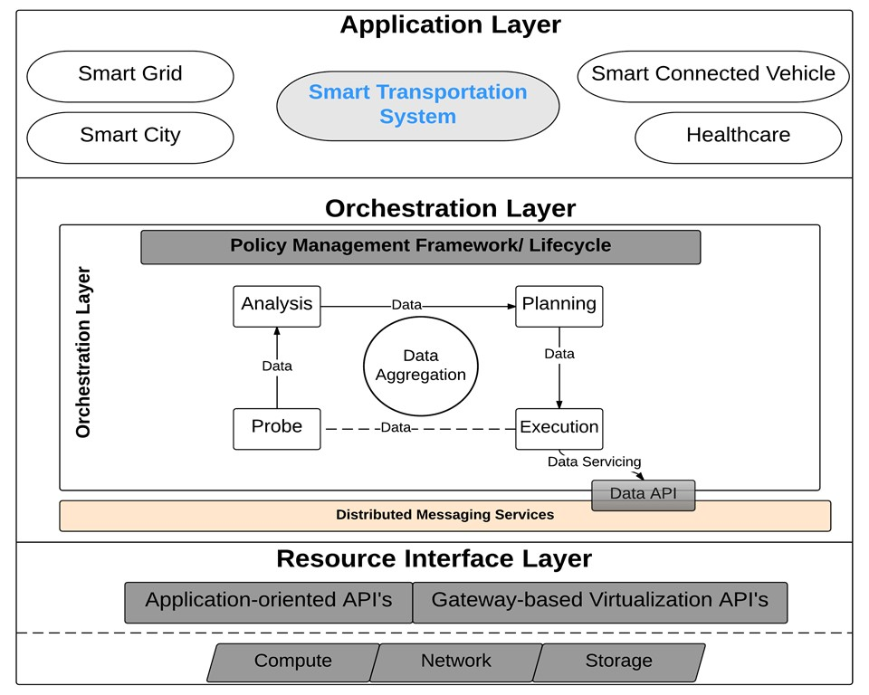

Abstract
With the increasing user demand for low latency, elastic provisioning of computing resources coupled with ubiquitous and on-demand access to real-time data, cloud computing has emerged as a popular computing paradigm to meet growing user demands.
However, with the introduction and rising use of wearable technology and evolving uses of smart-phones, the concept of Internet of Things (IoT) has become a prevailing notion in the currently growing technology industry.
Cisco Inc. has projected a data creation of approximately 403 Zetabytes (ZB) by 2018.
The combination of bringing benign devices and connecting them to the web has resulted in exploding service and data aggregation requirements, thus requiring a new and innovative computing platform.
Such a computation model would need to function at the edge-of-the-network, forming a bridge between the large cloud data centers and the distributed connected devices.
This research expands on the notion of bringing computational power to the edge-of-the-network, and then integrating it with the cloud computing paradigm whilst providing services to diverse IoT-based applications.
This expansion is achieved through the establishment of a new computing model that serves as a platform for IoT-based devices to communicate with services in real-time.
We name this paradigm as Gateway-Oriented Recon�gurable Ecosystem (GORE) computing.
Finally, this thesis proposes and discusses the development of a policy management framework for accommodating our proposed computational paradigm. The policy framework is designed to serve both the hosted applications and the GORE paradigm by enabling them to function more efficiently. The goal of the framework is to ensure uninterrupted communication and service delivery between users and their applications.

GORE Computing high level architecture